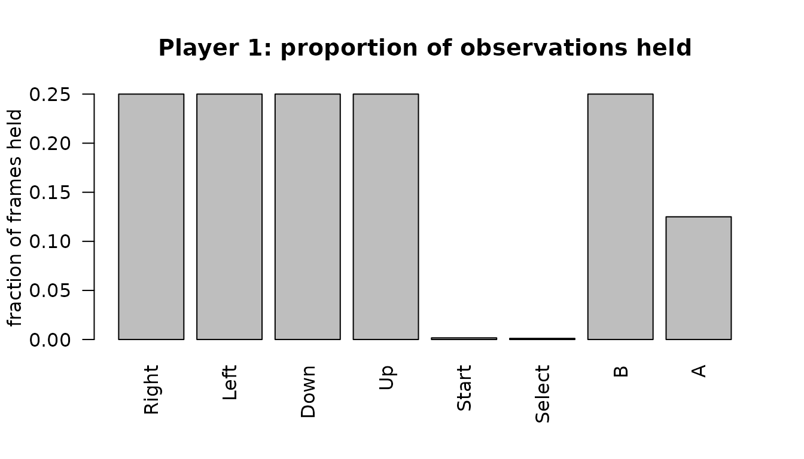

Reading emulator movie files with replayr
replayr.Rmd
library(replayr)Emulator movies record the inputs used during play.
replayr reads their buttons, keys, numeric device channels,
and timing fields into S3 objects for analysis in R. This vignette
starts with an artificial NES recording, then shows how to inspect
analogue sticks, mouse movement, and Wii motion fields. All examples are
original recordings supplied with the package.
Reading a movie
Assigned controller recordings use the S3 class
replayr_movie. Ordered polls with unknown ports and
heterogeneous device polls use replayr_poll_stream. Use
read_movie() to dispatch on the file extension:
fp <- system.file("extdata", "sample.fm2", package = "replayr")
mv <- read_movie(fp)
mv
#> <replayr_movie [fm2] observations=3600 players=2 buttons=8 source=sample.fm2>
#> Header keys: version, emuVersion, rerecordCount, palFlag, romFilename, comment
#> P1 active observations: Right=900, Left=900, Down=900, Up=900, Start=6, Select=4, B=900, A=450The bundled sample.fm2 contains repeating directional
movement and button pulses for two NES controllers. The
print method shows that the stream is 3,600 frames long,
has two player slots, uses eight compact button columns, and identifies
its source file.
The replayr_movie object
The object is an S3 list containing the imported input and metadata:
str(mv, max.level = 1L, give.attr = FALSE)
#> List of 19
#> $ header :List of 7
#> $ commands : int [1:3600] 0 0 0 0 0 0 0 0 0 0 ...
#> $ inputs : logi [1:3600, 1:2, 1:8] TRUE TRUE TRUE TRUE TRUE TRUE ...
#> $ source_path : chr "/home/runner/work/_temp/Library/replayr/extdata/sample.fm2"
#> $ button_mnemonics: chr [1:8] "R" "L" "D" "U" ...
#> $ button_names : chr [1:8] "Right" "Left" "Down" "Up" ...
#> $ analog :List of 2
#> $ analog_mode : chr "raw"
#> $ stick_overrides :List of 2
#> $ button_ids : int [1:8] 1 2 3 4 5 6 7 8
#> $ button_keys : chr [1:8] "dpad_right" "dpad_left" "dpad_down" "dpad_up" ...
#> $ control_layout :'data.frame': 8 obs. of 5 variables:
#> $ stick_values :List of 2
#> $ stick_modes : Named chr [1:2] "raw" "raw"
#> $ stick_deadzone : Named num [1:2] 0.125 0.125
#> $ stick_available :List of 2
#> $ analysis_ready : logi [1:2] FALSE FALSE
#> $ trigger_mode : chr "raw"
#> $ layout_version : int 3-
header— named list of header keys (e.g.version,emuVersion,romFilename,rerecordCount). Plus a synthetic_formatentry that records which parser produced the movie. -
commands— integer vector of lengthn_frames. Per-frame commands byte (Reset, Power, format-specific bits). Most movie frames are 0. -
inputs— logical 3D array, dimensions(n_frames, n_players, n_buttons).TRUEmeans the button was held that frame. -
source_path— where the movie was loaded from. -
button_mnemonics/button_names— short and human-readable labels for the third dimension.
Three helpers return the array’s dimensions:
Inspecting one player
player() extracts a single player’s frames as a 2D
logical matrix with named columns:
p1 <- player(mv, 1L)
dim(p1)
#> [1] 3600 8
active <- which(rowSums(p1) > 0L)
head(p1[active, , drop = FALSE])
#> R L D U T S B A
#> [1,] TRUE FALSE FALSE FALSE TRUE TRUE TRUE TRUE
#> [2,] TRUE FALSE FALSE FALSE FALSE FALSE TRUE TRUE
#> [3,] TRUE FALSE FALSE FALSE FALSE FALSE TRUE TRUE
#> [4,] TRUE FALSE FALSE FALSE FALSE FALSE TRUE TRUE
#> [5,] TRUE FALSE FALSE FALSE FALSE FALSE TRUE FALSE
#> [6,] TRUE FALSE FALSE FALSE FALSE FALSE FALSE FALSEpress_counts() returns the number of observations in
which each control is active:
press_counts(mv, 1L)
#> Right Left Down Up Start Select B A
#> 900 900 900 900 6 4 900 450The counts summarise the time spent on each direction and action in this example. A long hold contributes once per observation, while a brief press contributes only for its active interval.
A quick visual
Dividing these counts by the recording length gives the proportion of observations for which each control is active:
counts <- press_counts(mv, 1L)
rates <- counts / n_frames(mv)
barplot(rates,
las = 2,
ylab = "fraction of frames held",
main = "Player 1: proportion of observations held")
Compact controller columns and stable IDs
The matrix has compact columns for the recorded controls. Fixed gamepad layouts retain unused buttons; event-based recordings expose the controls present in their events. Stable IDs identify the same control across layouts.
button_layout(mv) # column, id, key, mnemonic, name, kind
#> column id key mnemonic name kind
#> 1 1 1 dpad_right R Right button
#> 2 2 2 dpad_left L Left button
#> 3 3 3 dpad_down D Down button
#> 4 4 4 dpad_up U Up button
#> 5 5 5 start T Start button
#> 6 6 6 select S Select button
#> 7 7 7 b B B button
#> 8 8 8 a A A buttonLeft and right stick directions, stick clicks, N64 C-buttons, and
keypad digits have distinct identities. button_layout()
lists the shared registry; button_layout(mv) gives the
complete layout for this recording, including source-specific keyboard
and peripheral controls.
The registry contains 53 consecutive IDs. Buttons with comparable roles share an ID across devices. The main mappings are:
| Source controls | Shared control and ID |
|---|---|
| Arcade Attack, Punch, or button 1; Doom Attack | A (8) |
| Arcade buttons 5–8 | L1, R1, L2, R2 (11–14) |
| Arcade D or button 4 | Y (10) |
| Arcade Jump, Jump/Start, or button 2; Doom Use; missile | B (7) |
| Arcade Kick or button 3 | X (9) |
| GunCon trigger, side A, side B, and offscreen shot | A, B, X, Y (8, 7, 9, 10) |
| Intellivision Top | X (9) |
| Joystick buttons 1–8 | A, B, X, Y, L1, R1, L2, R2 (8, 7, 9–14) |
| Keypad Clear and Enter | Select (6) and Start (5) |
| Keypad digits 0–9 and Power Pad sensors 1–12 | Equal numbers share numbered_0–numbered_12
(40–52) |
| Mouse buttons 4 and 5 | L1 and R1 (11 and 12) |
| Mouse left, right, and middle buttons | A, B, X (8, 7, 9) |
| Neo Geo A, B, C, and D | A, B, X, Y (8, 7, 9, 10) |
| Super Scope trigger, cursor, turbo, and pause | A, B, Mode, Start (8, 7, 19, 5) |
| View change | Select (6) |
| Wii Remote 1/2, +/−, and Home | X/Y (9/10), Start/Select (5/6), and Mode (19) |
Wii Remote D-pad and A/B buttons use the gamepad IDs. Nunchuk C/Z use 17/18, Classic Controller buttons use the corresponding gamepad IDs, and libTAS Guide uses Mode. The microphone uses ID 53. Genesis and Saturn C retain ID 17 because those controllers have separate C and X buttons.
These mappings align controller roles; the action performed by a
button still depends on the game. Keyboard keys, keypad Star/Pound, and
controls without a defined counterpart retain qualified source IDs. For
example, an arcade D button uses Y (10), while a libTAS keyboard D keeps
control:keysym_64. openMSX device-qualified controls also
remain separate, because its recordings can combine several devices in
one input stream.
When multiple source buttons share an ID, the column is active if
either is pressed. source_inputs and
source_layout preserve the separate states and their
mapping whenever aliases are combined. Wii device states also appear in
poll_fields as wii_remote_* and
wii_classic_* columns, which polls() includes
for unassigned streams.

Use align_buttons(list(movie1, movie2)) before comparing
different controller layouts. It explicitly fills absent controls with
FALSE and returns matrices with the same column identities. For
comparisons of game actions, supply a justified action mapping instead
of assuming common physical buttons perform the same action.
Reading other formats
The package has readers for 34 recording formats, with HGM as an additional extension alias for Hourglass WTF. Published-file checks cover 61 TASVideos platform labels:
| Family | Platforms represented in the checked recordings |
|---|---|
| Arcade and application platforms | Adobe Flash; Android; Arcade; IBM PC compatible; IBM PC DOS; Java 2 Platform, Micro Edition (J2ME); Mac OS / macOS; PICO-8; TIC-80; Web. |
| Atari | Atari 2600; Atari 7800; Atari Jaguar; Atari Jaguar CD; Atari Lynx. |
| Home computers and calculators | Amiga; Apple II; Commodore 64; MSX Home Computer System; Spectravideo SVI-318/328; Texas Instruments TI-83 Series; ZX Spectrum. |
| NEC | NEC PC-98; PC Engine / TurboGrafx-16; PC Engine CD / TurboGrafx-CD; PC-FX; SuperGrafx. |
| Nintendo | Famicom Disk System; Game Boy; Game Boy Advance; Game Boy Color; Nintendo 3DS; Nintendo 64; Nintendo 64DD; Nintendo DS; Nintendo DSi; Nintendo Entertainment System / Famicom; Nintendo GameCube; Satellaview; Super Game Boy; Super Nintendo / Super Famicom; Virtual Boy; Wii. |
| Other consoles | 3DO; CD-i; ColecoVision; Fairchild Channel F; Intellivision; Neo Geo Pocket; Odyssey 2 / Videopac; Sony PlayStation; Uzebox; Vectrex; WonderSwan. |
| Sega | Game Gear; Sega 32X; Sega CD / Mega-CD; Sega Genesis / Mega Drive; Sega Master System; Sega Saturn; Sega SG-1000. |
These are the archive’s game-platform labels. Some recordings capture
a host application, such as MAME or Ruffle under libTAS, so their key
codes describe that application. Linux and Windows games are represented
under IBM PC compatible. The compatibility
catalogue lists every platform–format combination, the accepted
versions and controller layouts within each format, and the evidence for
each claim. It is included with the package and can also be opened with
vignette("compatibility", package = "replayr").
For example, FM2 and FM3 support text and binary FCEUX input logs; BKM and early TAS use BizHawk’s older field order, while BK2, GBMV, and TASPROJ use named fields in ZIP containers. PlayStation PXM and PJM distinguish digital pads from analogue controllers with L3/R3 and two sticks. File extension alone is therefore only the first step in choosing a decoder.
Every supported extension dispatches through the same entry point:
supported_formats()
#> [1] ".fm2" ".bk2" ".fcm" ".lsmv" ".gmv" ".vbm"
#> [7] ".m64" ".smv" ".pxm" ".pjm" ".dtm" ".lmp"
#> [13] ".fm3" ".fmv" ".bkm" ".tas" ".tasproj" ".gbmv"
#> [19] ".mmv" ".dsm" ".mc2" ".mcm" ".ymv" ".ctm"
#> [25] ".gzm" ".zmv" ".mar" ".ltm" ".wtf" ".hgm"
#> [31] ".jrsr" ".omr" ".ctas" ".fbm" ".dft"Bundled samples live next to the FM2 one:
bundled <- list.files(system.file("extdata", package = "replayr"),
pattern = "^sample\\.", full.names = TRUE)
basename(bundled)
#> [1] "sample.bk2" "sample.dtm" "sample.fcm" "sample.fm2" "sample.gmv"
#> [6] "sample.lmp" "sample.lsmv" "sample.m64" "sample.pjm" "sample.pxm"
#> [11] "sample.smv" "sample.vbm"The button helpers work with a BK2 recording in the same way:
mv_bk2 <- read_movie(system.file("extdata", "sample.bk2", package = "replayr"))
mv_bk2
#> <replayr_movie [bk2] observations=3600 players=1 buttons=8 source=sample.bk2>
#> Header keys: MovieVersion, Platform, Core, GameName, Author, comment, controllerPorts, bk2NonStickPlayers, ...
#> P1 active observations: Right=900, Left=900, Down=900, Up=900, Start=6, Select=4, B=900, A=450
press_counts(mv_bk2, 1L)
#> Right Left Down Up Start Select B A
#> 900 900 900 900 6 4 900 450This BK2 example records an NES controller. It therefore has the same eight control columns as the FM2 example, allowing their matrices to be compared without rearranging columns.
Analogue sticks and numeric channels
analog_channels(movie, 1L) preserves the numeric source
channels, including X/Y axes, triggers, and supported peripheral values.
The default analog = "raw" keeps them separate from digital
button states. Choose a representation for each stick explicitly:
path <- system.file("extdata", "sample.dtm", package = "replayr")
movie <- read_movie(path, analog = c(left = "angle+magnitude", right = "cardinal8"))
head(analog_channels(movie)) # original values in source units
#> ltrigger rtrigger lstick_x lstick_y rstick_x rstick_y
#> [1,] 0 0 198 128 128 128
#> [2,] 0 0 198 130 128 128
#> [3,] 0 0 198 132 128 128
#> [4,] 0 0 198 133 128 128
#> [5,] 0 0 198 135 128 128
#> [6,] 0 0 197 137 129 128
head(stick_channels(movie)) # selected angles, magnitude, and direction centres
#> left_angle left_magnitude right_direction
#> [1,] 0.000000 0.5468750 NA
#> [2,] 1.636577 0.5470982 NA
#> [3,] 3.270488 0.5477671 NA
#> [4,] 4.085617 0.5482683 NA
#> [5,] 5.710593 0.5496026 NA
#> [6,] 7.431408 0.5436288 NA
button_layout(movie)
#> column id key mnemonic name kind
#> 1 1 1 dpad_right R Right button
#> 2 2 2 dpad_left L Left button
#> 3 3 3 dpad_down D Down button
#> 4 4 4 dpad_up U Up button
#> 5 5 5 start T Start button
#> 6 6 7 b B B button
#> 7 7 8 a A A button
#> 8 8 9 x x X button
#> 9 9 10 y y Y button
#> 10 10 11 l1 p L1 button
#> 11 11 12 r1 q R1 button
#> 12 12 18 z Z Z button
#> 13 13 32 right_e a Right stick E right_direction
#> 14 14 33 right_ne b Right stick NE right_direction
#> 15 15 34 right_n c Right stick N right_direction
#> 16 16 35 right_nw d Right stick NW right_direction
#> 17 17 36 right_w l Right stick W right_direction
#> 18 18 37 right_sw m Right stick SW right_direction
#> 19 19 38 right_s o Right stick S right_direction
#> 20 20 39 right_se r Right stick SE right_directionThe four options are cardinal4, cardinal8,
angle, and angle+magnitude. A scalar applies
to both sticks; a named left/right pair configures them independently.
Cardinal modes add four or eight separate direction columns per present
stick. Angle modes retain continuous directions in degrees: right 0, up
90, left 180, down 270. A neutral angle is NA. Magnitude is the
Euclidean length of centred, range-normalised X/Y axes; diagonal values
can exceed one.
deadzone accepts a scalar or named left/right values in
[0,1]. It is a radial threshold: default 0.25 for PSX/BK2 and 0.125 for
M64/DTM. A boundary between sectors selects the counterclockwise centre.
DTM analogue triggers remain numeric unless
triggers = "digital" is requested (threshold 128).
Stick conversion covers M64/GZM and BKM N64 axes, GameCube DTM,
supported Wii extensions, analogue PSX PXM/PJM, CTM Circle Pad/C-stick
polls, libTAS gamepads, and identified BK2 N64, PSX, Saturn 3D-pad, and
3DS controllers. BK2 accounts for different Nyma and Octoshock
conventions. A recognised calibration supplies the centre, range, and
vertical orientation. Other numeric channels remain available through
analog_channels() in their source units; requesting stick
conversion for an unknown calibration raises an error.
BK2 N64 files may log Boolean stick overrides as well as numeric
axes. The selected representation follows the emulator’s override
precedence and version-specific range. Numeric log values remain
unchanged; the Boolean source controls are retained in
movie$stick_overrides.
Use button_layout() to translate between a recording’s
compact columns and stable control IDs. Choose cardinal4,
cardinal8, angle, or
angle+magnitude when the analysis needs derived stick
representations; the default keeps raw X/Y.
Unassigned controller polls
Multi-controller M64 and DTM files retain their ordered polls in an
S3 object of class replayr_poll_stream. Each row has
port = NA because the format stores no per-poll port label.
Numeric channels, digital controls, commands, and original record bytes
remain accessible. A verified repeating polling order can be supplied
through controller_order when player assignment is
needed.
path <- system.file("extdata", "paper", "unassigned.dtm", package = "replayr")
polls(read_dtm(path, analog = "angle+magnitude"))
#> poll port dpad_right dpad_left dpad_down dpad_up start b a x
#> 1 1 NA FALSE FALSE FALSE FALSE FALSE FALSE TRUE FALSE
#> 2 2 NA FALSE FALSE FALSE FALSE FALSE TRUE FALSE FALSE
#> 3 3 NA FALSE FALSE FALSE FALSE FALSE FALSE FALSE FALSE
#> y l1 r1 z ltrigger rtrigger lstick_x lstick_y rstick_x rstick_y
#> 1 FALSE FALSE FALSE FALSE 0 0 128 128 128 128
#> 2 FALSE FALSE FALSE FALSE 10 20 200 160 100 80
#> 3 FALSE FALSE FALSE FALSE 0 0 128 128 128 128
#> left_angle left_magnitude right_angle right_magnitude commands is_connected
#> 1 NA 0.0000000 NA 0.0000000 0 TRUE
#> 2 23.96249 0.6155536 239.7436 0.4341389 0 TRUE
#> 3 NA 0.0000000 NA 0.0000000 0 TRUE
#> get_origin
#> 1 FALSE
#> 2 FALSE
#> 3 TRUEAdditional input devices and timing
Keyboard support includes libTAS, Hourglass, JPC-RR, openMSX, and the
relevant BizHawk cores. Mouse coordinates and movement come from libTAS,
JPC-RR, openMSX, BizHawk, or Dustmod; Hourglass records Windows
virtual-key states, including mouse-button virtual keys when used.
DS/DSi and 3DS recordings add touch input, and Dolphin Wii reports add
pointing and motion channels. analog_channels() retains
numeric fields in their original units. Source timing fields accompany
event logs, so an event count should not be converted to seconds using a
video rate. The individual reader help pages describe their observation
units.
LSMV recordings can contain several input observations per video
frame. The reader retains every row, so n_frames(movie)
counts input observations and movie$header$frameCount
counts video-frame starts. movie$subframes provides
source_frame, subframe, and
frame_start for relating each input to its video frame,
along with source-line and reset information. Extended SNES buttons and
the full SNES-side layout of Super Game Boy recordings remain available.
A declared Super Scope supplies trigger, cursor, turbo, and pause states
and signed gun_x/gun_y coordinates in source
units.
openMSX events distinguish relative trackball and paddle movement
from absolute touchpad coordinates. JoyMega buttons, JoyHandle buttons
and wheel values, and the Arkanoid dial retain their recorded
identities. Gunstick and Terminator Laser events provide trigger and
light-sensor states, with the complete port status in numeric channels.
Their light sensors use different polarities; these events describe a
detected screen response rather than an aim position. The original
peripheral-events.omr example exercises these
distinctions.
Controls outside the core gamepad registry have qualified textual
IDs. For example, a KeySym and a Windows virtual-key code retain
different names. button_layout(movie) identifies both the
core controls and those additional keys. A mnemonic may contain several
characters; code should work with matrix columns or stable keys rather
than split column names into characters.
For CTM and mixed-controller DTM, polls() exposes the
device and observation flags beside the inputs. Use those flags to
select observations of the device being analysed. The
poll_bytes component retains source records for checking
fields that require additional emulator context.
A mouse drag and Wii motion fields
The artificial Saturn mouse recording moves the pointer, holds the left button while dragging for 60 observations, releases it, and moves back. Its two numeric fields are relative motion per observation. The active rows can be inspected alongside the movement values:
path <- system.file("extdata", "paper", "mouse-drag.bk2", package = "replayr")
mouse <- read_movie(path)
layout <- button_layout(mouse)
left <- player(mouse)[, layout$column[layout$key == "a"]]
movement <- analog_channels(mouse)
head(data.frame(observation = which(left), movement[left, , drop = FALSE]))
#> observation P1.Motion.Left...Right P1.Motion.Up...Down
#> 1 61 1 0
#> 2 62 1 -1
#> 3 63 1 0
#> 4 64 1 -1
#> 5 65 1 0
#> 6 66 1 -1The Wii example contains a pointing sweep with A held, an acceleration pulse, and changes in the three MotionPlus axes. Selected observations show how these fields vary independently:
path <- system.file("extdata", "paper", "wii-motion.dtm", package = "replayr")
wii <- read_movie(path)
motion <- analog_channels(wii)
motion[c(1, 61, 121, 141),
c("ir1_x", "ir1_y", "accel_x", "gyro_pitch", "gyro_roll",
"gyro_yaw", "gyro_yaw_slow")]
#> ir1_x ir1_y accel_x gyro_pitch gyro_roll gyro_yaw gyro_yaw_slow
#> [1,] 256 384 512 8192 8192 8192 1
#> [2,] 256 384 512 8192 8192 8600 1
#> [3,] 728 384 512 8192 8192 8192 1
#> [4,] 728 384 592 8352 8112 8192 1ir1_x and ir1_y are coordinates for the
first IR camera point. The value pair 1023, 1023, with size 15, denotes
an absent point. MotionPlus pitch, roll, and yaw fields are 14-bit
counts; the accompanying *_slow flags identify their range.
Wii acceleration channels contain decoded device counts, with the
recorded nine-bit Y/Z values expanded according to Dolphin’s convention.
Converting these values to physical units requires device calibration.
Estimating orientation also requires observation timing and a method for
combining the motion measurements.
In real recordings a report may update only some devices. Wii poll
metadata gives report_id, valid_report, and,
where relevant, core_present. Unobserved numeric fields use
NA. Mixed GameCube/Wii streams also identify
observed_gc and observed_wii. Unknown reports
have valid_report = FALSE and retain their payloads in
poll_bytes. A known device family can still have an unknown
physical port when several ports of that family are enabled.
Download archives and long recordings
movie_members(path) lists recognised input recordings
inside a ZIP download. If the archive contains several movies, select
one explicitly with
read_movie(path, member = "the-recording.fm2"). Archive
extraction verifies checksums and uses a private temporary
directory.
read_bk2_chunks(path, FUN) reads a long BizHawk input
log in bounded chunks. The callback receives the same S3 representation
as read_bk2(), with source observation positions in the
header. The input log is verified and extracted once, requiring
temporary disk space for the expanded log. The callback can return
per-chunk counts or save results elsewhere without retaining the
complete input array in memory. The ordinary BK2 and LSMV readers use a
256 MiB default limit on the expanded log, with an explicit
max_input_bytes override.